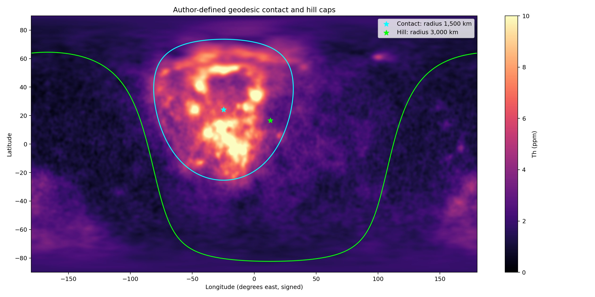
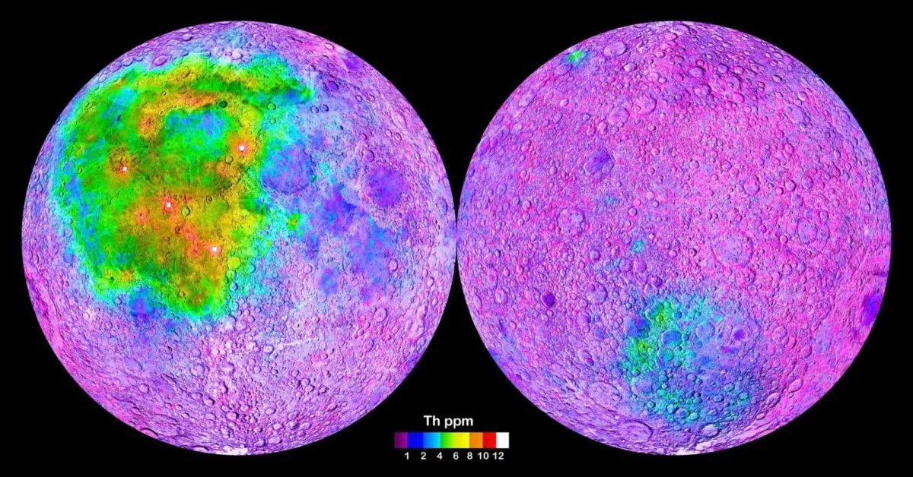
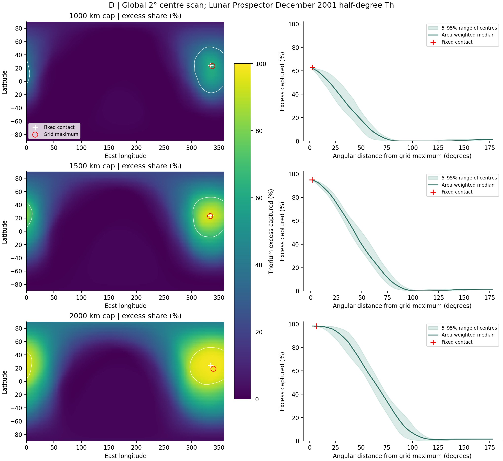
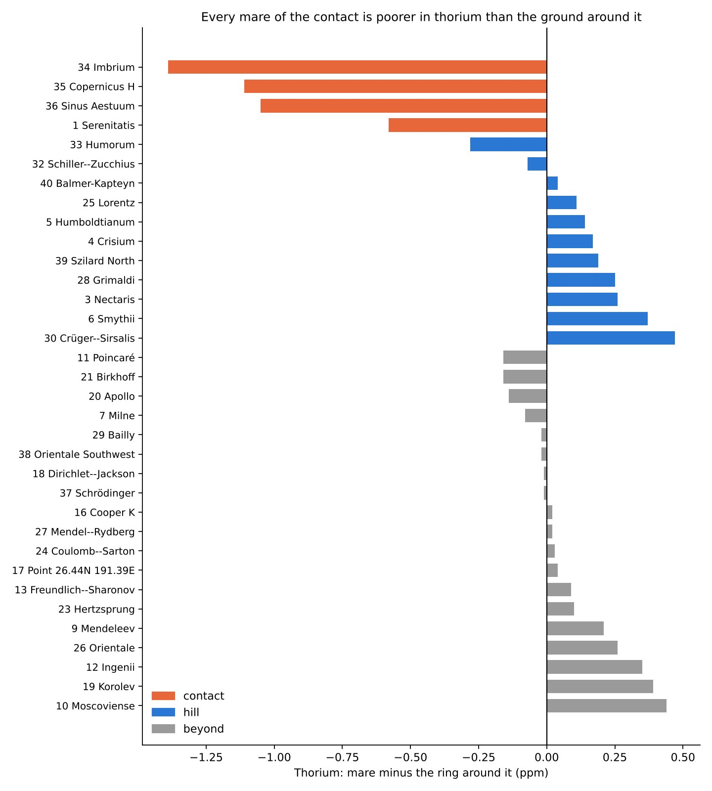
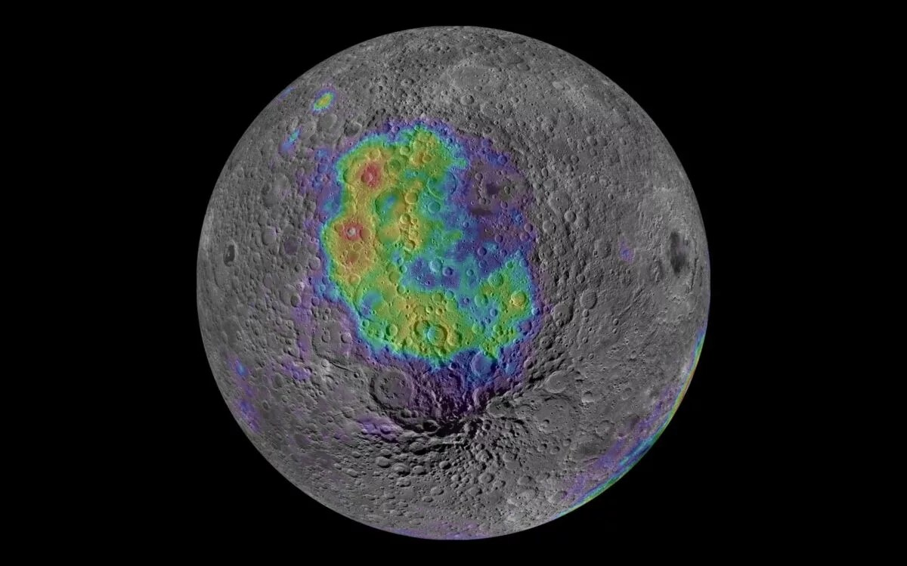
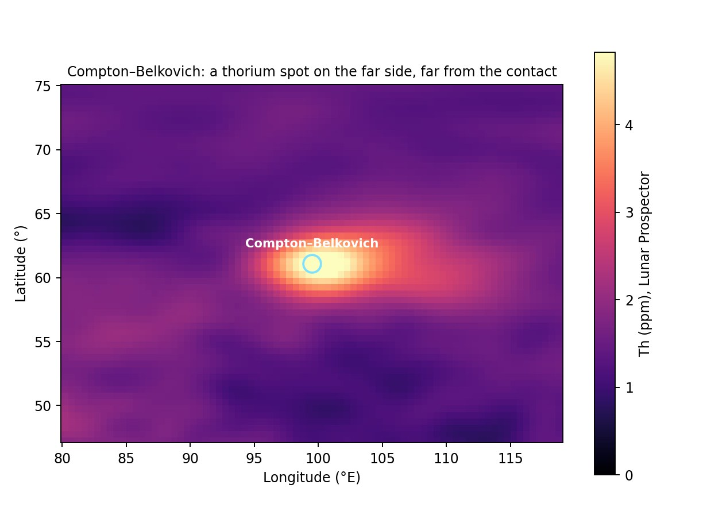
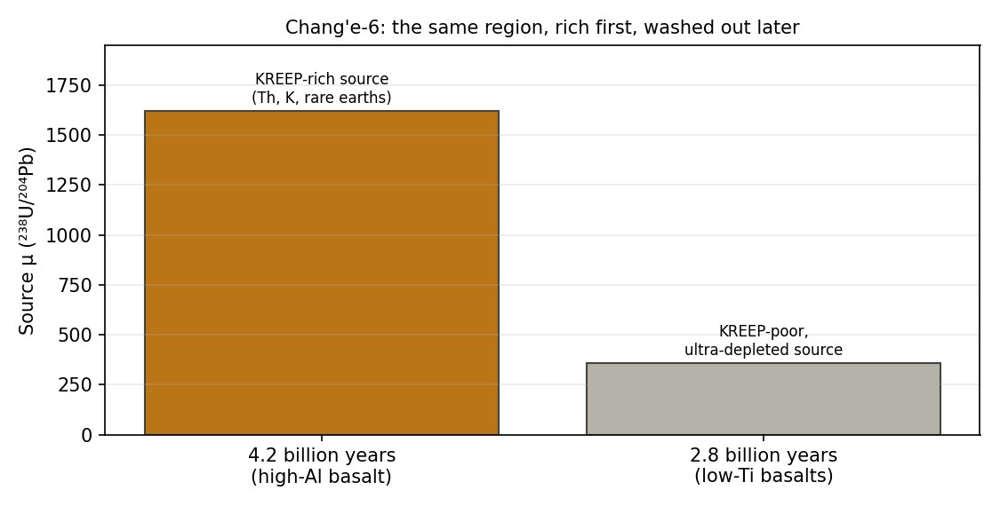
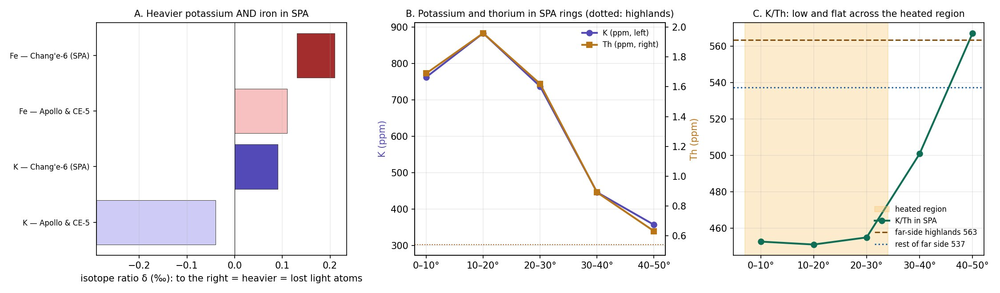

מודל LEF ← הירח ← הצד הקרוב מול הצד הרחוק ← התוריום
התעלומה — מדוע הרדיואקטיביות של הירח מרוכזת באזור אחד
מה זה?

התמונה המפתיעה מהחלל
כאשר מביטים במפה גלובלית של הירח הצבועה לפי ריכוז היסוד הרדיואקטיבי תוריום, נגלית אחת התופעות המפתיעות ביותר במדעי הירח. אילו היה התוריום מפוזר באופן אחיד על פני הירח, היינו רואים גוון אחיד למדי סביב כדור הירח כולו. בפועל, התמונה שונה לחלוטין: התוריום מרוכז כמעט כולו בכתם אחד גדול במערב הצד הקרוב — הצד הפונה תמיד אל כדור הארץ.
בשנים 1998–1999 הקיפה החללית Lunar Prospector את הירח ומדדה את קרינת הגמא הנפלטת מן התוריום מכל נקודה על פני השטח. המדידות הראו כי הכתם העשיר בתוריום אינו מפוזר באקראי, אלא ממלא כמעט בדיוק את עיגול המגע (דיסקה ברדיוס של 1,500 ק"מ, המסומנת על המפה בעיגול תכלת — האזור שבו היה הירח מחובר אל קצה האגס של כדור הארץ). בשאר חלקי הירח, ובמיוחד בצד הרחוק, כמעט שאין תוריום כלל, מלבד כתם שני, חלש יותר, היושב בתחתית אגן הענק שבדרום הצד הרחוק — South Pole–Aitken (SPA).
יחד עם התוריום מצויים באותו כתם עצמו גם יסודות נוספים המכונים יסודות "שאינם נכנסים לגבישים" (יסודות בלתי-מתאימים): אשלגן (K), יסודות נדירים (REE) וזרחן (P). בספרות המדעית מכונה צירוף יסודות זה בשם KREEP, והאזור כולו בצד הקרוב נקרא "טראן ה-KREEP של פרוסלארום" (PKT).
שבע השאלות של התעלומה
מדוע נאסף כמעט כל התוריום של הירח באזור אחד, דווקא במקום שבו היה הירח מחובר לכדור הארץ — ומדוע דווקא הימות הכהות שבאותו אזור עניות בו? תעלומה זו מתפרקת לשבע שאלות מוגדרות, שכל אחת מהן נשענת על מדידה ישירה:
- הריכוז הגלובלי: מדוע שישית אחת בלבד מפני השטח של הירח אוצרת בתוכה 95% מעודף התוריום של הירח כולו, בעוד ששאר הירח כמעט ריק מתוריום?
- גבולות אזור המגע: מדוע הכתם ממלא את עיגול המגע — אזור ברדיוס של 1,500 ק"מ שנקבע מראש מתוך הגיאומטריה של האגס — כמעט עד שוליו, ומחוץ לו כמעט נעלם? בתוך עיגול זה מצויים 95% מעודף התוריום ו-78% מכלל השטח הירחי שבו ריכוז התוריום עולה על 3 חלקים למיליון (ppm); ומחוץ לעיגול הגבעה (רדיוס 3,000 ק"מ) כמעט שאין תוריום כלל. גבולות הכתם חופפים אפוא לגבולות אזור המגע.
- הדיוק במרכז הכתם: מדוע מרכז כתם התוריום יושב, בסטייה של 47 ק"מ בלבד, על הנקודה שנקבעה מראש במודל כמרכז המגע האחרון שבין הירח לבין כדור הארץ?
- הסדר הפנימי בתוך האזור: מדוע בתוך אזור המגע נושאים מישורי הבזלת והרמות ריכוז כמעט זהה של תוריום, ואילו דווקא הימות הכהות הן הקרקע הענייה ביותר בתוריום?
- הצד הרחוק הדל: מדוע הקרום העבה והעתיק של הצד הרחוק כמעט נקי מתוריום?
- התבנית באגן SPA: מדוע הריכוז השני של תוריום בירח מצוי דווקא באגן הענק של הצד הרחוק (SPA), ומדוע הוא מסודר שם בצורת טבעת וסהר סביב המרכז ולא במרכז עצמו?
- החוליה הארצית: אם הירח בנוי מחומרו של כדור הארץ, כיצד מתחלק התוריום בתוך כדור הארץ עצמו — ומה מלמדת חלוקה זו על התהליך שעיצב את הירח?
הכירו את החומר: מדוע התוריום הוא "גשש" מושלם
כדי להבין כיצד נוצרה חלוקה זו, עלינו להכיר תחילה את התכונות הפיזיקליות והכימיות של היסוד תוריום (Th), היסוד מספר 90 בטבלה המחזורית.
כמעט כל התוריום בטבע הוא איזוטופ יחיד — תוריום-232 — שזמן מחצית החיים שלו הוא 14 מיליארד שנה (יותר מפי שלושה מגילו של כדור הארץ). המשמעות היא שכמעט כל התוריום שהיה קיים בראשית ימי המערכת עדיין קיים כיום, ולכן המפה שאנו מודדים מהחלל משקפת כמעט במדויק את הפיזור המקורי שלו. במהלך דעיכתו הרדיואקטיבית האיטית, פולט התוריום חום וקרני גמא המאפשרות למדוד אותו מרחוק.
חמש תכונות יסוד קובעות היכן יימצא התוריום בכל רגע נתון:
- הוא אינו נכנס לגבישים: היון של התוריום גדול מאוד ונושא מטען חשמלי גבוה, ולכן אין לו מקום במבנה המסודר של גבישים רגילים. כאשר חומר מותך מתקרר ומתגבש, התוריום נדחק החוצה, נותר בנוזל ומצטבר בשארית הנוזלית האחרונה. באופן הפוך, כאשר חומר מוצק מתחיל להימס, התוריום עובר כמעט כולו אל טיפות הנוזל הראשונות. הכלל פשוט: התוריום הולך תמיד עם הנוזל.
- הוא "אוהב סלע" (ליתופילי): התוריום נקשר בחוזקה לחמצן ונותר תמיד בחומר הסיליקטי, ואינו שוקע עם הברזל אל ליבת כדור הארץ.
- הוא עמיד בחום ואינו מתאדה: התוריום הוא מן היסודות העמידים ביותר בחום. כאשר חומר מתחמם לאורך זמן רב, יסודות נדיפים כמו אשלגן בורחים ומתאדים, בעוד שהתוריום נותר מאחור. משום כך משמש היחס שבין אשלגן לתוריום (K/Th) כמעין "מדחום גיאולוגי" המתעד חימום ממושך בעבר.
- מים אינם ממיסים אותו: במים רגילים התוריום כמעט שאינו מתמוסס; הוא נע אך ורק יחד עם נוזל התכה סיליקטי או כגרגירים מוצקים.
- הוא מייצר חום: יחד עם אורניום ואשלגן, התוריום הוא אחד ממקורות החום הפנימיים העיקריים של כוכבי לכת וירחים.
בכדור הארץ, התוצאה של חמש תכונות אלו ברורה ומוכרת היטב: ליבת הברזל נקייה כמעט לחלוטין מתוריום; המעטפת שמתחת לקרום ענייה בו מאוד (כ-0.08 חלקים למיליון, ppm); ורוב התוריום מרוכז בקרום היבשתי הקל — הסיאל — ובמיוחד בחלקו העליון (כ-10.5 ppm).
מכאן נובעת מסקנה מכרעת: התוריום אינו מסמן "חומר עמוק". להפך — הוא מסמן מקומות שבהם חומר נמס, ונוזל ההתכה נאסף והתרכז.
מה נמדד — העובדות והמספרים
כיצד מודדים תוריום מן החלל?
במהלך שרשרת הדעיכה הרדיואקטיבית של תוריום-232 נפלטות קרני גמא בעלות אנרגיה אופיינית, ומד-קרני-הגמא המותקן על גבי חללית מונה אותן. מאחר שקרני גמא אלו נבלעות בקלות בתוך הקרקע, המכשיר מודד את ריכוז התוריום בשכבה העליונה בלבד — בעומק של עשרות ספורות של סנטימטרים מתחת לפני השטח.
החללית Lunar Prospector מיפתה את הירח כולו ברשת תאים של חצי מעלה, אך שדה הראייה של הגלאי שלה רחב: המכשיר "רואה" כתם שקוטרו כ-60 ק"מ, ולכן כל פרט קטן מכך מיטשטש במפה. מאוחר יותר מדדה החללית היפנית Kaguya את הירח שוב באמצעות מכשיר נפרד, ובשנת 2018 פרסמו Wilson ועמיתיו מפה משוחזרת וחדה יותר ברזולוציה של 26 ק"מ (מפה שנתוניה המספריים טרם נבדקו בסדרה).
הירח כולו במבט-על
ארבעה נתוני מפתח מסכמים את התמונה הגלובלית של התוריום על פני הירח:
| מדד מרכזי | ערך נמדד | משמעות |
|---|---|---|
| חלק מעודף התוריום (מעל 3 ppm) בדיסקת המגע | 95.0% | כמעט כל עודף התוריום מרוכז בדיסקת המגע |
| שטח דיסקת המגע מתוך פני הירח | 17.5% | כשישית בלבד משטח הירח |
| דירוג מרכז המגע מתוך 16,200 מרכזים אפשריים | מקום 3 מתוך 16,200 | התאמה כמעט מושלמת למרכז שנקבע מראש |
| חציון התוריום בתוך המגע לעומת מחוצה לו | 5.39 ppm בתוך / 1.52 ppm מחוץ | פער של יותר מפי שלושה וחצי |
כאשר בוחנים את פני הירח לפי חלוקות גיאוגרפיות וגיאולוגיות שונות, התמונה מתחדדת:
- שלושת אזורי הקרום (Jolliff et al. 2000):
- אזור התוריום של הצד הקרוב (PKT): תופס כ-10% משטח הירח (או 16% יחד עם הימות שבתוכו), וריכוז התוריום הממוצע בו הוא 4.8 ppm.
- הרמות (Highlands): מכסות 65% משטח הירח, עם ריכוז ממוצע של כ-1 ppm, ובפנים הצד הרחוק הריכוז יורד ל-0.3 ppm בלבד.
- אגן South Pole–Aitken (SPA): מכסה 11% משטח הירח ואוצר 5.8% מכלל התוריום שבקרום.
- ערכי חציון על פני הירח (דוח המדידה של 10.10.2026): חציון התוריום על פני הירח כולו הוא 1.69 ppm; בימות החציון הוא 4.40 ppm; ברמות המרוחקות 300 ק"מ ויותר מכל ימה החציון יורד ל-1.24 ppm; ובאגן SPA החציון עומד על 2.13 ppm.
- חלוקה לפי ארבעת רבעי הירח (מאמר 5, §J.5): הגזרה הקרובה מובילה עם 5.12 ppm, אחריה החצי המוביל עם 3.27 ppm, הצד הרחוק עם 2.20 ppm, והחצי הנגרר עם 2.01 ppm. בסיכום כולל, הצד הקרוב נושא פי אחד וחצי יותר תוריום מן הצד הרחוק.

אזור המגע ומה שבתוכו (מחקרים 10 ו-13 של מאמר 5)
במאמר 3 נקבעו מראש הקואורדינטות של מרכז המגע (24.1°N, 335.2°E) ורדיוסו (1,500 ק"מ) מתוך הגיאומטריה של האגס, עוד לפני שנקראו מפות התוריום.
- דיסקת המגע (1,500 ק"מ): מכסה 17.5% מפני השטח של הירח, אך אוצרת בתוכה 95.0% מעודף התוריום שמעל 3 ppm ו-78% מכלל השטח הירחי שבו התוריום עולה על 3 ppm.
- דיסקת הגבעה (3,000 ק"מ): מכסה 57.8% מפני הירח ומחזיקה 98.4% מעודף התוריום.
כדי לבדוק האם מרכז המגע הוא אכן מרכז הריכוז האמיתי ולא חפיפה מקרית, הוזזה דיסקה ברדיוס זהה על פני 16,200 נקודות ברחבי הירח (במרווחים של 2 מעלות באורך וברוחב). המרכז האופטימלי ביותר על פני הירח כולו (23°N, 334°E) לוכד 95.14% מעודף התוריום; מרכז המגע שנקבע מראש במודל לוכד 94.99%, נמצא במרחק 47 ק"מ בלבד ממנו, ומדורג שלישי מתוך 16,200. גם בבדיקה בדיסקות ברדיוס 1,000 ק"מ ו-2,000 ק"מ הוא מדורג במקומות 5 ו-19 — תמיד בתוך 0.2% העליונים. בדיקה חוזרת עצמאית (מכתב 3, 12.10.2026) אישרה תוצאה זו. ככל שמתרחקים ממרכז המגע יורד החלק הנתפס בהדרגה (מתחת למחצית במרחק 50 מעלות, ועד אפס בצד הרחוק) — תבנית מובהקת של איסוף סביב מרכז אחד.

בתוך אזור המגע: ימות, מישורי בזלת ורמות
מודל LEF מבחין בין שני סוגים של קרקע כהה בצד הקרוב: ימה היא פתח פעיל מעל כיפת הזנה — תעלה שחיברה את פנים כדור הארץ אל פנים הירח; ואילו מישור בזלת הוא קרום רגיל מתוך חתך האגס שנמס במקומו, ללא תעלה לעומק. בתוך אזור המגע שוכנות ארבע ימות: אימבריום, סרניטאטיס, קופרניקוס H וסינוס אסטואום.
| סוג קרקע בתוך המגע | חלק משטח המגע | חציון תוריום | חלק מעודף התוריום של הירח |
|---|---|---|---|
| ארבע הימות | 11.1% | 3.99 ppm | 5.0% |
| מישורי בזלת | 51.8% | 5.62 ppm | 52.4% |
| רמות | 37.1% | 5.48 ppm | 37.6% |
הנתונים חושפים תבנית מפתיעה: מישורי הבזלת והרמות נושאים ריכוז כמעט זהה של תוריום (5.62 ו-5.48 ppm), וכל אחד מהם מחזיק כמעט בדיוק את חלקו היחסי בשטח. לעומתם, ארבע הימות מחזיקות פחות ממחצית מחלקן היחסי בשטח (5.0% מהעודף על 11.1% מהשטח). כל אחת מארבע הימות ענייה בתוריום בהשוואה לטבעת הקרקע המקיפה אותה (משפת הימה ועד 150 ק"מ החוצה): אימבריום ענייה ב-1.39 ppm, קופרניקוס H ב-1.11 ppm, סינוס אסטואום ב-1.05 ppm, וסרניטאטיס ב-0.58 ppm. מחוץ לאזור המגע, לעומת זאת, הימות שוות לטבעת שסביבן או עולות עליה (חציון של +0.17 ppm באזור הגבעה ו-+0.02 ppm מעבר לה).

- תוריום מול טיטניום: גם טיטניום נוטה להישאר בנוזל כשהמאגמה מתקררת, אך במידה פחותה: כאשר ריכוזו גבוה דיו, הוא מתגבש יחד עם ברזל כמינרל אילמניט ונותר במקום. בהתאם לכך, בקרקעיות הימות שבתוך המגע נמדד 30% פחות תוריום מאשר במישורים (טווח 20%–39%), אך רק 5% פחות טיטניום (הבדל שאינו מובהק). מחוץ למגע הקרקעיות עניות ב-12% בתוריום ועשירות ב-24% בטיטניום. בהגדרה הסופית של הימות (34 העיגולים, מכתב 6), החוסר בתוריום בתוך המגע עומד על 1.68 ppm (טווח 1.07–2.25 ppm).
בדיקות חוזרות, הצד הרחוק ו-SPA
- אימות במכשיר נפרד (Kaguya, מכתב 5, 13.10.2026): מדידות החללית היפנית Kaguya מאשרות כי אימבריום וסרניטאטיס עניות בתוריום מן הקרקע שסביבן, גם כאשר בודקים את הקרקעית הפנימית הרחוקה יותר מ-50 ק"מ מן השפה (אימבריום: −2.75 ppm ב-Lunar Prospector ו-−1.90 ppm ב-Kaguya). ההבדל המצרפי בין כלל הימות לכלל המישורים אינו מובהק בנתוני Kaguya.
- הכיפות הקבורות של הצד הרחוק (מאמר 5, חלק D): מעל 44 כיפות הזנה קבורות בצד הרחוק, ריכוז התוריום זהה לזה של סביבתן (+0.05 ppm).
- ההילה סביב הימות ומבחן "האזור הנתפס": במאמר 6 (§L.1, §L.3) נמדד בפליטה שסביב שש ימות ריכוז של 2.16 ppm עד 50 ק"מ, 1.39 ppm ב-300–600 ק"מ, ו-1.02 ppm בביקורת רחוקה. אולם בבדיקה מדוקדקת סביב כל 34 הימות (מבחן "האזור הנתפס", 22.11.2026 — השוואת הטבעת הקרובה ב-0–150 ק"מ מול קרקע רמות רחוקה ב-300–600 ק"מ), התברר כי לאחר הסרת השיפוע האזורי של המגע (הירידה הטבעית של התוריום עם המרחק ממרכז המגע), אין עודף בטבעת הקרובה (חציון 0.00 ppm). הימה ענייה מן הטבעת שסביבה אך ורק בתוך אזור המגע (4 מתוך 4).
- אגן South Pole–Aitken (מאמר 8):
- בתוך 30 מעלות ממרכז האגן, ריכוז התוריום גבוה פי 2.4–3.6 מאזורי ההשוואה. הוא נמוך במרכז האגן (1.7 ppm), מגיע לשיא בטבעת של 10–20 מעלות, ויוצר צורת סהר בצד המערבי–צפון-מערבי (4–5 ppm, עם נקודות חמות המגיעות לכ-6 ppm במכתשים Birkeland ו-Oresme V).
- הסהר הוא שכבת כיסוי שנחתה מלמעלה: בתוך 43 מכתשים התוריום זהה לזה שמחוצה להם, וריכוזו נחלש ככל שמתרחקים ממרכז האגן (). מרכז המכתשים העשירים בתוריום שוכן במרחק 6.6 מעלות מנקודת היציאה הנגדית לאימבריום.
- היחס בין אשלגן לתוריום (K/Th) נמוך ואחיד בכל פנים האגן (451–455), נמוך ב-16%–20% מסביבתו, ובבזלות שהחזירה משימת Chang’e-6 האשלגן והברזל כבדים איזוטופית (האטומים הקלים אבדו). מאותו אזור עצמו הגיעו שני סוגי בזלת: בזלת בת 4.203 מיליארד שנה שמקורה עשיר בתוריום (), ובזלת צעירה יותר בת 2.807 מיליארד שנה שמקורה "שטוף" ומדולדל (; Zhang et al. 2025).

דגימות מוחזרות, כתמים קטנים וכדור הארץ
- דגימות שהובאו לכדור הארץ:
- אפולו 12: קרקע הקשורה לקרני המכתש קופרניקוס מכילה 7.6–9.4 ppm תוריום ו-14.0%–15.7% תחמוצת ברזל, לעומת 0.83 ppm תוריום ו-20.5% תחמוצת ברזל בבזלת המקומית שמתחתיה (Korotev et al. 2011).
- אפולו 15: בזלת KREEP מהרי האפנינים מכילה 10–15.4 ppm תוריום (Taylor et al. 2012).
- Chang’e-5: בזלת בת 2.03 מיליארד שנה מלב אזור התוריום בצד הקרוב, שמקורה כמעט נטול KREEP (פחות מחצי אחוז), והיסודות הנדירים שבה הצטברו בתהליך של התגבשות ממושכת (Tian et al. 2021).
- כתמים קטנים מחוץ למגע ומים:
- Compton–Belkovich: הר געש מבודד בצד הרחוק (61°N, 99.5°E) של לבה סמיכה ועשירה בצורן, שהכיל 14–26 ppm תוריום בעת התפרצותו ופוזר בפיצוץ על פני שטח של כ-40 × 75 ק"מ (Wilson et al. 2015); ייתכן שהוא צעיר יחסית, בן כמיליארד שנה.
- הכיפות הסיליקטיות של הצד הקרוב: כיפות Gruithuisen, Hansteen Alpha ו-Lassell עשירות בתוריום ודומות לכיפות ריוליט ארציות (Hagerty et al. 2006), ולצדן זוהו כ-20 "כתמי תוריום קטנים" באזור התוריום (Lawrence et al. 2003).
- עקבות מים: כמעט כל מרבצי הזכוכית הגעשית הגדולים על הירח מכילים מים — כ-0.05% ממשקל הזכוכית — ובהם מרבצי אריסטרכוס שבאזור התוריום ומרבצי אפולו 15 ו-17 (Milliken & Li 2017).
- השוואה לכדור הארץ:
- בכדור הארץ (Rudnick & Gao 2003), המעטפת מכילה כ-0.08 ppm תוריום, הקרום האוקייני כ-0.2 ppm, והקרום היבשתי (הסיאל) כ-5.6 ppm בממוצע — בחלוקה ברורה של 1.2 ppm בקרום התחתון, 6.5 ppm בתיכון, ו-10.5 ppm בעליון (ובליבה כמעט אין תוריום כלל). בירח, ריכוז התוריום במגע (3.99–5.62 ppm) קרוב לממוצע של הקרום היבשתי של כדור הארץ (5.6 ppm), ואילו הצד הרחוק הדל (0.3–1.24 ppm) תואם לקרום היבשתי התחתון של כדור הארץ.
- בבדיקת האזור שמתחת לאגס באוקיינוס השקט (25°N, 165°E, מכתב 5, מבחן B, 13.10.2026) אין רכסים אוקייניים רגילים לדגימה; בבזלות של הוואי ואיי קרולינה יחס תוריום/לנתן נמוך (0.068 מול 0.110), אך מדובר בשני ארכיפלגים בלבד (ובלעדי הוואי ההבדל נעלם), כך שהשאלה טרם הוכרעה.

ארבעה דימויים מוחשיים: איך תוריום נע, נאסף ונדחק
לפני שנשווה בין ההסברים המדעיים השונים, כדאי להבין את ההיגיון הפיזיקלי של תנועת התוריום באמצעות ארבעה דימויים מחיי היומיום. כל אחד מהם מתאר מנגנון ממשי שפעל בשלב אחר של בניית הירח:
- חול רטוב בחוף (המגע):
כאשר עומדים על חול רטוב בחוף הים ולוחצים עליו ביד שוב ושוב, גרגירי החול מתהדקים זה לזה, המים הכלואים ביניהם נדחקים כלפי מעלה, ועל פני השטח נוצרת שלולית. כך בדיוק פעל אזור המגע שבין כדור הארץ לירח: חומר חם ורווי מים שנלחץ והורפה ללא הרף, ובכל לחיצה נדחק ממנו הנוזל — ואיתו התוריום — ונאסף לכיסים ולשלוליות. - מוט שעובר דרך להבה (הסיאל):
בתעשיית השבבים מטהרים מוטות של צורן (סיליקון, Si) בשיטה המכונה "זיקוק אזורי": מעבירים מוט מוצק לאט דרך אזור צר וחם שבו הוא נמס מקומית. הזיהומים שבו מעדיפים את הנוזל, נשארים לכודים באזור החם, והמוט יוצא נקי ומטוהר מן הצד השני. הסיאל של כדור הארץ עבר דרך אזור המגע החם כמו אותו מוט: הוא הותיר את התוריום מאחוריו בתוך המגע, והמשיך דל ונקי מתוריום אל הצד הרחוק. - מי ים קופאים (הימות):
כאשר מי ים קופאים מלמעלה, הקרח שנוצר עשוי ממים מתוקים כמעט לגמרי, ואילו המלח נדחק החוצה אל התמלחת הנוזלית שמתחתיו. באותו אופן, כל ימה באזור המגע קפאה מפני השטח פנימה: חזית הקפיאה דחקה את התוריום אל הנוזל שנותר בתעלה, והותירה את קרקעית הימה ענייה בתוריום. - שקית תה שנחלטת שוב ושוב (אגן SPA):
כאשר חולטים שקית תה במים רותחים, החליטה הראשונה יוצאת כהה ועשירה; לאחר כמה חליטות השקית כבר שטופה ודלה. מתחת לאגן South Pole–Aitken הותך הסיאל שוב ושוב במשך זמן רב: ההתכה הראשונה מיצתה ולקחה עמה את התוריום, ומה שנותר מאחור היה מדולדל ו"שטוף".
מדע מול מודל: שארית של אוקיינוס מגמה, או חלוקה של החומר הארצי בדרך?
כדי להעמיד את מודל LEF למבחן הוגן, נסכם תחילה את ארבעת ממצאי היסוד שנמדדו על הירח, נבחן כיצד מסבירה אותם הספרות המקובלת, ונראה כיצד קורא אותם מודל LEF.
1. סיכום ארבעת הממצאים
- הריכוז: 95% מעודף התוריום של הירח מצויים בשישית אחת בלבד מפני השטח, ומרכז הריכוז שוכן בטווח של 47 ק"מ ממרכז המגע שנקבע מראש.
- בתוך האזור: מישורי הבזלת והרמות שווים כמעט בריכוזם (5.62 ו-5.48 ppm), ואילו הימות הן הקרקע הענייה ביותר (3.99 ppm), וכל ימה ענייה מסביבתה הקרובה.
- הצד הרחוק: הקרום עני בתוריום (0.3–1.2 ppm), ומעל הכיפות הקבורות הריכוז זהה לסביבה.
- אגן SPA: הריכוז גבוה פי 2.4–3.6 מן הסביבה, אך המרכז עצמו מדולדל ומוקף בטבעת ובסהר; היחס K/Th נמוך ואחיד; ובזלות האגן מעידות על מקור עשיר לפני 4.2 מיליארד שנה שהפך למקור שטוף לפני 2.8 מיליארד שנה.
2. מה אומרת הספרות המקובלת?
בספרות המקובלת, התפלגות התוריום מוסברת באמצעות רצף של אירועים נפרדים:
- אוקיינוס המגמה: הירח הצעיר היה מכוסה באוקיינוס מגמה גלובלי שהתגבש בהדרגה. הגבישים הראשונים שקעו או צפו, ואילו הנוזל השאריתי האחרון — שהועשר בתוריום, באשלגן וביסודות נדירים (KREEP) — נאסף מתחת לקרום הצד הקרוב. החום הרדיואקטיבי של שכבה זו התיך את המעטפת והזין את התפרצויות הימות (Jolliff et al. 2000; Wieczorek & Phillips 2000). בהסבר זה אין לאזור PKT מרכז גיאומטרי מוגדר מראש — זהו פשוט המקום שבו הצטברה השארית.
- הפליטה של אגן אימבריום: אגן אימבריום נחפר על ידי פגיעה באזור עשיר בתוריום ופיזר חומר פליטה עשיר על פני הקרקע שסביבו (Haskin 1998). לפי Levin et al. (2025), פני השטח של הצד הקרוב הם שכבת פליטה עשירה המונחת מעל קרום עני (פחות מ-1 ppm), ומתחתיה מצוי מאגר בעל ריכוז של 45–120 ppm.
- מדוע דווקא בצד הקרוב? Jones et al. (2022) הציעו שהחום מפגיעת הענק שיצרה את SPA עורר זרם הסעה חם במעטפת שדחף את שכבת ה-KREEP אל הצד הקרוב. Andrews-Hanna et al. (2025) הציעו שהגוף שיצר את SPA הגיע מצפון, כך שחומר הפליטה במערב האגן עשיר בתוריום ובמזרח עני בו משום שהפגיעה פרצה סמוך לגבול השכבה העשירה, וכי הקרום שהתעבה בצד הרחוק "סחט" את הנוזלים האחרונים אל הצד הקרוב.
- אגן SPA: הסהר העשיר בתוריום מפורש כחשיפה של מעטפת שכבתית או של שארית אגם התכה שנחפרו על ידי מכתשים צעירים (Moriarty et al. 2021), ואילו האשלגן הכבד איזוטופית מוסבר באידוי רגעי בזמן הפגיעה.
- מה נותר פתוח בספרות: הבזלת הצעירה שהחזירה משימת Chang’e-5 (בת 2.03 מיליארד שנה) הגיעה ממקור כמעט נטול KREEP, ולכן נותרה פתוחה השאלה מה הניע את הגעשיות הצעירה באזור (Tian et al. 2021). ההבדל הכימי והמבני בין שני צדי הירח מוגדר בספרות כ"תעלומה ותיקה".
3. מה אומר מודל LEF?
במודל LEF אין צורך בהסבר נפרד לכל ממצא: כל החומר הגיע מכדור הארץ, והשאלה אינה מאיפה בא התוריום — אלא כיצד החומר הארצי התחלק בדרך.
- הריכוז והמרכז: הסיאל — הקרום הקל של כדור הארץ הנושא את התוריום — גלש במעלה האגס אל הירח. באזור המגע, שהיה חם, רטוב וסגור, עבר התוריום לנוזל ונאסף. משום כך הריכוז מסודר סביב מרכז גיאומטרי אחד: מרכז המגע.
- בתוך האזור: מישורי הבזלת הם סיאל שנמס במקומו ושמר על התוריום שבו, בדומה לרמות שסביבם. לעומתם, הימות היו תעלות לעומק: החומר שעלה דרכן הגיע מן העומק העני בתוריום, וכאשר קפאו מבחוץ פנימה, דחפה חזית הקפיאה את התוריום פנימה אל התעלה.
- הצד הרחוק: הסיאל חלף דרך אזור המגע החם, מסר לו את התוריום, והמשיך דל ונקי אל הצד הרחוק.
- אגן SPA: החום והנוזל שנכנסו דרך אימבריום וסרניטאטיס ("המבער") חצו את הירח והגיעו לתחתית הצד הרחוק. שם הותך הסיאל שוב ושוב מלמטה; ההתכה הראשונה לקחה את התוריום מן המרכז, והסיבוב המהיר הסיט את החומר הנפלט הצדה ויצר את הסהר.
טבלת השוואה: ממצאים מול הסברים
| ממצא תצפיתי | ההסבר בספרות המקובלת | ההסבר במודל LEF |
|---|---|---|
| 95% מעודף התוריום בשישית מהירח | מסבירה: השארית הנוזלית הצטברה מתחת לצד הקרוב. | מתאים: התוריום נאסף באזור המגע. |
| המרכז — 47 ק"מ ממרכז שנקבע מראש | לא צופה מרכז גיאומטרי מסוים. | מתאים: המרכז נקבע מראש מהגיאומטריה של האגס. |
| מישורים = רמות; הימות הכי עניות | לא צופה: הבזלת אמורה להיות עשירה היכן שעלתה דרך השארית. | מתאים: הימות הן תעלות לעומק; חזית הקפיאה דחפה את התוריום פנימה. |
| צד רחוק עני בתוריום | מסבירה: הקרום העבה סחט את הנוזל אל הצד הקרוב. | מתאים: הסיאל השאיר את התוריום במגע והמשיך דל. |
| SPA: טבעת, סהר, K/Th נמוך | מסבירה כל ממצא באמצעות מנגנון נפרד. | מתאים: חימום ממושך מלמטה — הסבר פיזיקלי אחד לכל הממצאים. |
| אפולו 12: עשיר בתוריום, עני בברזל | מסבירה: ערבוב עם חומר KREEP מקומי. | מתאים: לאחר הניתוק כדור הארץ זרק את החלק הקל (העשיר בתוריום ועני בברזל). |
המנגנון במילים — מסעו של התוריום מכדור הארץ אל הירח
כיצד עבר התוריום של כדור הארץ הצעיר אל הירח, מדוע נלכד כמעט כולו באזור המגע, ומה עיצב את תבניתו בימות, בצד הרחוק ובאגן SPA? במודל LEF זהו סיפור רציף אחד, המתנהל בתשעה שלבים ברורים:
א. נקודת המוצא בכדור הארץ: התוריום בסיאל
תוריום הוא יסוד ש"אוהב סלע" (ליתופילי): הוא נקשר בחוזקה לחמצן, נותר בתוך החומר הסיליקטי, ואינו שוקע עם הברזל אל ליבת כדור הארץ. בתוך החומר הסיליקטי הוא בוחר תמיד בנוזל — משום שהיון שלו גדול ובעל מטען גבוה, אין לו מקום במבנה של גבישים רגילים.
לכן, בכל פעם שחומר מוצק נמס חלקית, התוריום עובר אל טיפות הנוזל הראשונות, וכשהנוזל מתקרר ומתגבש הוא נדחק אל השארית הנוזלית האחרונה. בכדור הארץ התוצאה מוכרת היטב: המעטפת נותרה כמעט נקייה מתוריום (כ-0.08 ppm), ואילו הקרום היבשתי הקל — הסיאל, שנוצר מהתכה בנוכחות מים — ריכז בתוכו את התוריום (כ-5.6 ppm בממוצע, ועד כ-10.5 ppm בחלקו העליון).
ב. העלייה במעלה האגס: הסיאל מחליק אל הקצה
בשלב הבנייה הסתובב כדור הארץ הצעיר במהירות, והלחץ הפנימי הרים ממנו בליטה ענקית — האגס — שבקצה שלה נבנה הירח. האגס פעל כעמוד שיקוע עצום: החומר הכבד שקע בחזרה אל כדור הארץ, ואילו החומר הקל עלה אל הקצה.
שכבת הסיאל הקלה והעשירה בתוריום החליקה כיריעה אחת על פני הסימה שמתחתיה, לאורך דפנות האגס ועד לקצהו (מאמר 3, §C.10). הגבול שבין הסיאל לסימה היה "משומן" היטב, משום שחומר כדור הארץ הצעיר עוד הכיל בתוכו את רוב מי האוקיינוסים של ימינו. בדרך זו הגיע החומר הנושא את התוריום אל הירח.
ג. אזור המגע: מלכודת חמה, רטובה וסגורה
אזור המגע — הממשק שבו ישב הירח על קצה האגס — היה מנגנון חם: זרם החומר העולה לאורך האגס הביא אליו חום רב, שהמיס את הסיאל והחליק את פני השטח.
אך מעבר לחום, אזור המגע היה סגור לחלוטין. בכל מקום אחר על פני כדור הארץ הצעיר, תהליך המיון הפנימי שחרר את המים החוצה: בקו הקורוטציה ברחו הנדיפים לחלל, ובאזורי האוקיינוסים השתחררו המים כאדים, התעבו וירדו כגשם. באזור המגע, לעומת זאת, ישב הירח מעל כמעין מכסה אטום, והמים שנדחפו כלפי מעלה לא יכלו להימלט.
המים הלכודים הצטברו, ובלחץ של כמה קילומטרים של חומר מעליהם ובטמפרטורה גבוהה הפכו למים "על-קריטיים" — מצב צבירה שבו אין עוד הבדל בין נוזל לאדים, ולכן אין התאדות ואין התעבות. מים על-קריטיים מתערבבים ישירות עם נוזל ההתכה ומורידים בחדות את טמפרטורת ההתכה של החומר (לשם השוואה, גרניט רטוב נמס כבר בכ-650°C, לעומת יותר מ-1,000°C כשהוא יבש). כך נותר אזור המגע רך ונוזלי חלקית לאורך כל שלב הבנייה.
ד. המשאבה הגאותית: שאיבה כל 2.9 שעות
האגס והירח הסתובבו יחד עם כדור הארץ (ביממה של כ-5.77 שעות). פעמיים בכל סיבוב עמדה השמש בקו אחד עם האגס, משכה את הירח ואת כדור הארץ לכיוונים מנוגדים, ומתחה את צוואר האגס; ופעמיים בכל סיבוב היא עמדה בניצב לו, וצוואר האגס התכופף.
התוצאה הייתה פעולה מחזורית של לחיצה והרפיה מדי 2.9 שעות בערך (כ-3,000 מחזורים בשנה), ללא הפסקה — ממש כמו יד הלוחצת שוב ושוב על חול רטוב בחוף הים. כל לחיצה הידקה את השלד המוצק ודחקה מתוכו את הנוזל הקל: מים ונוזל התכה עשיר בתוריום, שנאספו יחד לכיסים ("שלוליות") ונותרו לכודים במגע. בסדר גודל ראשוני, הלחץ בכל מחזור היה חלש למדי — כ-0.14 אטמוספרה, בדומה ללחיצת יד על חול — אך לאורך 600 מיליון שנות הבנייה הצטבר התהליך לכ-1.8 טריליון מחזורים של שאיבה גאותית.
ה. הזיקוק: הסיאל ממשיך דל אל הצד הרחוק
כאשר הסיאל חלף דרך אזור המגע החם והרטוב, הוא השאיר בו את התוריום — בדיוק כמו מוט צורן העובר דרך להבה בתהליך של זיקוק אזורי ומשאיר בה את הזיהומים. לאחר שעבר את אזור המגע, המשיך הסיאל כשהוא נקי ודל בתוריום אל הצד הרחוק של הירח, ושם נבנתה ממנו, שכבה על גבי שכבה, הקרום העבה. משום כך הצד הרחוק עני בתוריום (0.3–1.2 ppm, בדומה לקרום היבשתי התחתון של כדור הארץ), ומשום כך גם מעל הכיפות הקבורות שם אין כל עודף תוריום.
ו. הימות: חזית הקפיאה דחפה את התוריום פנימה
ארבע הימות שבתוך אזור המגע — ובראשן אימבריום וסרניטאטיס — היו תעלות פתוחות שחיברו את פנים כדור הארץ אל פנים הירח. דרכן זרמו חום וחומר מן העומק — חומר שעלה מתחת לשכבת הסיאל ולכן היה עני בתוריום, בדומה למעטפת של כדור הארץ.
כאשר הזרם נחלש, התקררה כל ימה מפני השטח פנימה, בדומה למי ים הקופאים מלמעלה. שכבת הגבישים החיצונית שהתקשתה ראשונה דחתה מתוכה את התוריום, שברח אל הנוזל שנותר בתעלה. כך נותרו קרקעיות הימות נקיות ועניות בתוריום, בעוד שהטיטניום — שחלקו נלכד בגבישי אילמניט — נותר במקומו (ירידה של 30% בתוריום לעומת 5% בלבד בטיטניום). מחוץ לאזור המגע קפאו הימות מהר ועמדו על קרקע ענייה בתוריום ממילא, ולכן אין שם פער ניכר בין הימה לסביבתה.
ז. "המבער" ואגן SPA: חליטה חוזרת בצד הרחוק
דרך אימבריום ("המבער הראשי") וסרניטאטיס ("המבער המשני") חדרו חום ונוזל לתוך הירח, חצו אותו והגיעו אל תחתית הקרום בצד הרחוק, ממש מול שתי הימות. שם הותך הסיאל מלמטה במשך זמן רב, מבלי שלבה פרצה אל פני השטח.
בכל מחזור של התכה לקח הנוזל הראשון את התוריום, ומה שנותר מאחור נשטף והתדלדל — ממש כמו שקית תה הנחלטת שוב ושוב. בראשית התהליך ירתה ימה מרכזית באגן SPA חומר אל פני השטח, והסיבוב המהיר של המערכת המחוברת (יממה של כ-5.77 שעות) הסיט את החומר הנפלט לצד אחד ויצר את הסהר העשיר בתוריום שבמערב האגן. במקביל, החום הממושך אידה את האשלגן הנדיף והותיר את התוריום העמיד, מה שיצר יחס K/Th נמוך ואחיד בכל האזור המחומם. תהליך כפול זה מסביר מדוע דגימות בזלת בנות 4.2 מיליארד שנה מאגן SPA מעידות על מקור עשיר בתוריום, ואילו בזלות בנות 2.8 מיליארד שנה מאותו אזור עצמו מעידות על מקור "שטוף" ומדולדל.
ח. רגע הניתוק: המכסה הוסר והפקק נפתח
ברגע שהירח הגיע אל קו הקורוטציה, התקלף והתקפל כלפי חוץ מקצה האגס, נפתחו הפתחים והמכסה הוסר: הלחץ הפנימי השתחרר בבת אחת, הנדיפים פרצו החוצה, ואזור המגע נחשף — ואיתו ריכוז התוריום הגדול שנאסף בו. מאותו רגע איבד הירח את נדיפיו בהדרגה, עד שהפך ליבש כפי שאנו מכירים אותו היום. מן המים הרבים שהיו כלואים בו נותרו רק עקבות: זכוכיות געשיות רטובות, ובהן אלו של אריסטרכוס השוכן בלב אזור התוריום.
ט. לאחר הניתוק: החלק הקל של כדור הארץ
גם לאחר שהירח נפרד, כדור הארץ המשיך להשליך חומר לחלל במשך תקופה מסוימת. אולם כעת, ללא גשר החיבור, רק החלק הקל ביותר הצליח להימלט מכוח המשיכה של כדור הארץ ולהגיע אל הירח, בעוד שהחומר הכבד נותר קשור לכדור הארץ. חומר קל זה הוא בדיוק החומר העשיר בתוריום והעני בברזל — וכך נראות דגימות אפולו 12 הקשורות לקרני המכתש קופרניקוס: 7.6–9.4 ppm תוריום ופחות ברזל מאשר בבזלת המקומית שעליה נחתו.
תיבות מעבדה: שלוש בדיקות עומק
כדי למנוע הטיה, משרטטים מטרה (עיגול המגע) על המפה מראש, לפני פתיחת הנתונים, ומשווים אותה לכל עיגול אחר בגודל זהה שניתן לשרטט על הירח. כל אחד מ-259,200 התאים של המפה משוקלל לפי שטחו האמיתי על הכדור, וסוכמים רק את עודף התוריום שמעל 3 ppm. מרכז המגע שנקבע מראש מדורג שלישי מתוך 16,200.
נבדקה השאלה האם סביב כל ימה קיימת טבעת עשירה בתוריום. בבדיקה הראשונית נראתה סביב ימות המגע טבעת עשירה בהרבה מן הסביבה הרחוקה — אך התברר שהדבר נבע מכך שהסביבה הרחוקה פשוט רחוקה יותר ממרכז המגע. לאחר הסרת השיפוע האזורי הטבעי, העודף נעלם לחלוטין: במפה של 60 ק"מ אין טבעת כזו (ואם היא קיימת, היא צרה מכך).
אם החומר הנושא את התוריום עזב את כדור הארץ דרך האגס, האזור שמתחת לאגס באוקיינוס השקט אמור להיות שונה בתכולת התוריום שלו. בבדיקת בזלות האוקיינוס התברר שאין רכסים מרכז-אוקייניים רגילים בתוך האזור עצמו; בבזלות של הוואי ושל איי קרולינה יחס תוריום/לנתן אכן נמוך (0.068 מול 0.110), אך מדובר בשני ארכיפלגים בלבד (ובלעדי הוואי ההבדל נעלם), ולכן השאלה טרם הוכרעה.
נוסחאות המפתח של פרק התוריום
מאחורי ההסבר הפיזיקלי עומדות שמונה נוסחאות יסוד, הקושרות בין תכונותיו הגרעיניות והכימיות של התוריום לבין המדידות על פני הירח:
1. כמה תוריום נותר מאז ראשית המערכת:
האיזוטופ תוריום-232 דועך בקצב איטי ביותר, בזמן מחצית חיים של 14.05 מיליארד שנה. בתוך 4.5 מיליארד שנה נותר ממנו:
כלומר, כ-80% מכלל התוריום שהיה קיים בהתחלה עדיין קיים כיום, ולכן המפה שאנו מודדים מהחלל משקפת כמעט במדויק את הפיזור המקורי.
2. מדוע התוריום נאסף בנוזל:
מקדם החלוקה הוא היחס שבין ריכוז היסוד בגביש המתגבש לבין ריכוזו בנוזל שמסביבו. עבור תוריום, מקדם החלוקה קטן מאוד (). כאשר מאגמה מתגבשת ונותר ממנה חלק קטן בלבד כנוזל, ריכוז התוריום בנוזל עולה לפי:
כאשר נותרת עשירית אחת בלבד של נוזל (), ריכוז התוריום בו גדל פי עשרה. משוואה זו עומדת בבסיס כל השלבים: הנוזל האחרון הנדחק פנימה בימה, הנוזל הראשון הממוצה באגן SPA, והשלוליות הנאספות במגע.
3. הזיקוק האזורי — מעבר דרך אזור חם (Pfann 1952):
כאשר מוט מוצק עובר דרך אזור נמס ברוחב , ריכוז היסוד בחומר המתמצק אחריו הוא:
כאשר מקדם החלוקה קטן, החומר המתמצק מעבר לאזור החם יוצא כמעט נקי, והיסוד נותר ומצטבר באזור הנמס. במודל LEF, הסיאל הוא המוט, ואזור המגע הוא האזור הנמס.
4. העודף שנאסף בדיסקת המגע:
החלק מכלל עודף התוריום שמעל 3 ppm הלכוד בתוך עיגול נתון (כאשר כל תא במפה משוקלל לפי שטחו האמיתי ) הוא:
5. המשאבה הגאותית — גאות השמש על הירח המחובר:
בהערכת סדר גודל ראשונית, תאוצת הגאות של השמש והלחץ המחזורי הפועל על שטח המגע הם:
כאשר (מרחק הירח המחובר ממרכז כדור הארץ), הוא המרחק אל השמש, ו- הוא רדיוס המגע. הלחץ בכל מחזור חלש — כ-0.14 אטמוספרה בלבד, בדומה ללחיצת יד על חול — אך לאורך וביממה של , מספר הלחיצות המצטבר הוא:
6. מים על-קריטיים שאינם מתאדים:
מעל הנקודה הקריטית של המים אין עוד הבדל בין פאזת הנוזל לפאזת האדים:
7. מדחום החימום באגן SPA:
האשלגן נדיף ואילו התוריום עמיד בחום; ככל שהחימום ממושך וחזק יותר, היחס ביניהם יורד:
8. תוריום מול טיטניום בקרקעיות הימות:
החתימה במציאות: שבע עקבות נצפות
שבע תצפיות בלתי תלויות על פני הירח ובדגימות המעבדה מאשרות יחד את החלוקה שמציע המודל:
- מרכז אחד: עודף התוריום נאסף סביב מרכז אחד ודועך בהדרגה עם המרחק ממנו, ומרכז זה חופף בדיוק רב למרכז המגע שנקבע מראש (מקום 3 מתוך 16,200).
- מישורים כרמות: בתוך אזור המגע, הסיאל שנמס במקומו (מישורי הבזלת, 5.62 ppm) והרמות שסביבו (5.48 ppm) נושאים ריכוז כמעט זהה.
- ימות נקיות: ארבע ימות המגע עניות בתוריום מסביבתן, הן בקרקעית הפנימית והן במדידות מכשיר נפרד (Kaguya), כאשר התוריום ירד במידה חדה בהרבה מן הטיטניום.
- צד רחוק דל: ריכוז התוריום בצד הרחוק נמוך (0.3–1.2 ppm), ומעל הכיפות הקבורות הריכוז זהה לסביבה.
- אגן SPA: מרכז מדולדל המוקף בטבעת ובסהר, יחס K/Th נמוך ואחיד, ושני מקורות בזלת בזמן (דגימות Chang’e-6: בזלת בת 4.2 מיליארד שנה ממקור עשיר בתוריום, ובזלת בת 2.8 מיליארד שנה ממקור "שטוף" ודל בתוריום וביסודות נדיפים, עם אשלגן וברזל כבדים איזוטופית).
- החלק הקל לאחר הניתוק: דגימות אפולו 12 הקשורות לקרני קופרניקוס עשירות בתוריום (7.6–9.4 ppm) ועניות בברזל יחסית לבזלת המקומית.
- עקבות המים: זכוכיות געשיות רטובות — ובהן מרבצי אריסטרכוס בלב אזור התוריום — וכן כיפות של לבה סמיכה ועשירה בצורן, מהסוג שבכדור הארץ נוצר בנוכחות מים.


מה יפריך את הקריאה, ומה עוד פתוח?
קריטריונים להפרכה
הסבר זה לתוריום יופרך אם יתגלה אחד מן הממצאים הבאים:
- מפה חדה יותר (ברזולוציה של 26 ק"מ) שבה מרכז ריכוז התוריום זז הרחק ממרכז המגע, או שבה הימות שבתוך המגע עשירות בתוריום כמו מישורי הבזלת.
- דגימה מן הרמות העתיקות של הצד הרחוק שתימצא עשירה בתוריום בדומה לאזור המגע.
- מים () בזכוכיות געשיות ובמינרל אפטיט שאינם תלויים כלל במרחק ממרכז המגע — או שמתרכזים דווקא הרחק ממנו.
- דגימות ממעמקי אגן SPA (משימות Artemis או Chang’e עתידיות) שיימצאו ללא כל עקבות של התכה חוזרת ושל אובדן נדיפים.
שאלות שעוד נותרו פתוחות
- Compton–Belkovich: כתם תוריום חזק בצד הרחוק, הרחק מאזור המגע ומאגן SPA, שהתפרץ בפיצוץ מונע-גז; ייתכן שגם שם נכלאו נדיפים, אך האתר טרם נבחן במסגרת המודל.
- הצד של כדור הארץ: מה נותר בכדור הארץ מתחת לאזור האגס לאחר שהסיאל והתוריום עלו אל המגע (בדיקת בזלות האוקיינוס במכתב 5 טרם הכריעה).
- חישוב מלא של המשאבה הגאותית: חישוב מפורט של המתח המחזורי בצוואר האגס כתוצאה מגאות השמש, וכמות הנוזל שניתן לרכז כך בתוך חומר רווי מים, חם ורך.
טבלת הסיכום ומגבלות המדידה
| מה נבדק | נתונים | תוצאה | מצב | משמעות |
|---|---|---|---|---|
| התוריום במגע (מחקר 10) | Lunar Prospector, 259,200 תאים; 16,200 מרכזים | 95.0% בשישית; מקום 3; 47 ק"מ | ירוק | התוריום נאסף באזור המגע |
| התוריום בתוך המגע (מחקר 13) | Lunar Prospector + Kaguya טיטניום | ימות 3.99, מישורים 5.62, רמות 5.48; −30% Th, −5% Ti | כתום: חלק התוריום עבר, חלק הטיטניום לא הפריד | הימות נקיות; פעולת חזית הקפיאה |
| בדיקה במכשיר נפרד (מכתב 5) | Kaguya | אימבריום וסרניטאטיס עניות גם בקרקעית הפנימית | לא הוכרע במצרף | החוסר בימות הגדולות חוזר על עצמו |
| הכיפות הקבורות | 44 כיפות GRAIL | +0.05 ppm מול הסביבה | — | החומר העולה מן העומק עני בתוריום |
| האזור הנתפס (22.11) | 34 ימות; רמות בלבד | אין עודף אחרי הסרת השיפוע | — | אין צורך בהילה; לבדוק ב-26 ק"מ |
| אגן SPA (מאמר 8) | Lunar Prospector, Chang’e-6 | פי 2.4–3.6; סהר כיסוי; K/Th 451–455; : 1,620 360 | מתאים | סיאל שהותך שוב ושוב |
| אחרי הניתוק (מחקר 12) | 3,478 מכתשים; אפולו 12 | פליטה ענייה בברזל; 7.6–9.4 ppm | — | החלק הקל של כדור הארץ |
| כדור הארץ (מכתב 5, מבחן B) | Gale 2013; Stracke 2022 | הוואי וקרולינה — Th/La נמוך (2 ארכיפלגים) | פתוח | לא הוכרע |
- מגבלות שיש לזכור: המפה של Lunar Prospector גסה יחסית (כ-60 ק"מ), והמפה החדה יותר (26 ק"מ) טרם נבדקה במלואה; קו המתאר של אזור המגע במאמר 3 שורטט מתוך קווי הבזלת, ולכן ההתאמה במרכז חזקה אך אינה בלתי תלויה לחלוטין; והמדד "חלק מעודף התוריום" הוא סכום של ריכוז כפול שטח על פני השטח, ולא כמות התוריום הכוללת בגוף הירח כולו.
קישורים ודלת להמשך
- ארגז הכלים — מושגי יסוד: הסיאל והסימה · האגס כעמוד שיקוע · המגע · המבער · קו הקורוטציה · הנדיפים · חזית הקפיאה · הפקק.
- בעיות קשורות: הימות כפתחים · אגן SPA · הצד הרחוק העבה · המים בירח · הכיפות הסיליקטיות · Compton–Belkovich · מה נשאר בכדור הארץ.
- מבחנים עתידיים: המפה המשוחזרת של 26 ק"מ · מים בזכוכיות ובאפטיט מול המרחק מהמגע · דגימות SPA (משימות Artemis ו-Chang’e) · בזלות האוקיינוס השקט · גלאי גאונייטרינו בקרקעית הים.
- דלת להמשך: הבעיה האחות הבאה בענף הצד הקרוב מול הצד הרחוק — הימות: פתחים מעל כיפות הזנה.